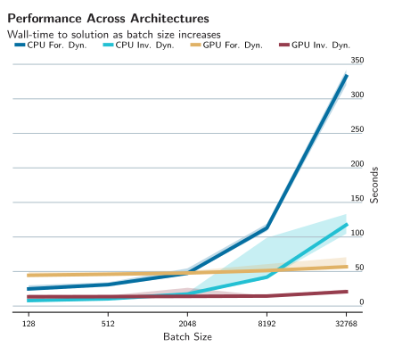

Towards Massively Parallel Motion Planning with Inverse Dynamics
04. Experiments
Scaling Capabilities

Stable GPU scaling as batch size (parallel environments) increases.
Surprising CPU performance for up to thousands of parallel environment.
Inverse dynamics formulation overall faster.
25